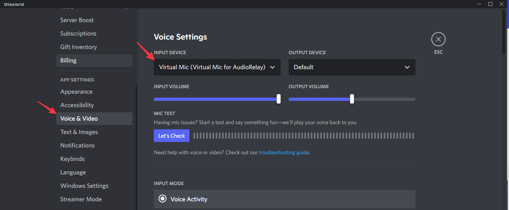

AudioRelay 这几年是怎么把 PC 和手机拧成一根音频线的
从单一扬声器转发到双向麦克风、从 Wi-Fi 依赖到 USB 直连，AudioRelay 的产品史就是一部"把一根虚拟音频线焊进日常"的迭代记录。
如果现在让我用一句话说 AudioRelay 是什么——去audiorelay官网看它的介绍页面也会告诉你同一个答案：它就是一条把 PC 和 Android 手机焊在一起的虚拟音频线。PC 上播的任何声音可以无缝流到手机扬声器，手机麦克风又能反向灌进 PC 的任何 App。打开就能用，关了就干净，不留进程不弹窗。但站在 2026 年回头看，这条"焊好的线"其实花了好几个版本才拧成现在这个样子。
起步：一个功能的极简实现
样本文档里没有提到 AudioRelay 最早的版本号——它直接从"Windows 客户端默认就是服务器"这个事实开讲。没有版本号、没有 changelog 链接，这个"起步"恰恰说明一件事：它从第一天就没打算做一个花里胡哨的东西。最早的版本一定只有一个核心功能——PC 上跑个后台进程监听端口，手机端去发现它，把 PC 的声音拉过来当扬声器用。仅此而已。
这个极简起步很聪明。安装包从下载拿就能直接装，因为"把 PC 声音发到手机"本身就是一个足够强的痛点——你想在床上看电脑上的视频又不想插耳机线、你想把游戏声音接到客厅的 Android 盒子、你想在开会时把电脑声音偷偷导到自己手机而不影响同事。这个场景不需要解释，用户装完就能用。
但极简起步意味着很多东西是后来补的。
转折点：从单向到双向——Virtual Mic 来了
文档里有一个细节很有意思：它花了一整篇讲"Windows 10/11 虚拟麦克风驱动自动安装配置"。自动安装这四个字本身就是一个版本节点。在这个版本之前，Virtual Mic 驱动可能需要用户手动跑安装包、手动签驱动、手动启用。Windows 内核级驱动注册从来不是普通用户能搞定的事——管理员权限、驱动签名、设备管理器里找灰色设备启用，这些步骤卡死了一大批想让手机麦反向输入的人。
这个版本（文档没给号，但它必然存在）做了一件事：把 Virtual Mic 的内核驱动注册塞进了 AudioRelay 的连接流程里——首次成功连接 Android 设备时，自动以管理员权限完成驱动注册，Windows 声音设置里立刻多出一条 Virtual Mic (Virtual Mic for AudioRelay)。对用户来说，从"我想让手机麦进 PC"到"Zoom 里选 Virtual Mic 就能说话"，中间所有的黑色盒子全被包起来了。
这个转折点的意义远不止"加了麦克风功能"——它把 AudioRelay 从一个"PC 扬声器延伸器"变成了一个双向音频中继站。之前是 PC→手机单向，现在可以 PC⇌手机双向。两个方向同时打通之后，很多之前想象不到的场景成立了：手机当 PC 的无线麦录播课、PC 当手机游戏的扬声器+录屏、手机当远程会议的麦+扬声器……

第三阶段：Wi-Fi 之外的路
文档里有一整篇在讲 VPN、访客网络、移动热点、公司网络这些场景下"找不到服务器"的问题。这说明在某个阶段，AudioRelay 团队遇到了一个天花板：Wi-Fi 太脆弱。全隧道 VPN 劫持了本地网段、访客网络强制 AP 隔离、公司网络屏蔽 UDP 5353 的 mDNS 广播——这些都是用户的环境问题，但在用户眼里就是"AudioRelay 不好用"。
这个阶段的迭代逻辑很清晰：不再假设用户有一个"干净"的局域网。样本文档里提到的移动热点方案、USB Tethering 方案（有线条零延迟），都是在 Wi-Fi 失败时的 Plan B。特别是 USB Tethering——它绕过了整个 Wi-Fi 层，PC 和手机通过 USB 形成一个物理上的点对点网络，完全不依赖路由器、不依赖 DNS、不依赖 VPN 设置。AudioRelay 能在 USB Tethering 网络上正常发现和连接，说明它的 mDNS 广播逻辑和手动 TCP 连接逻辑都做了"任意局域网都能跑"的鲁棒性处理。
这是个很务实的阶段——团队没有去做公网中继、没有做云端配对，而是在"本地连接"这个边界内把能踩的坑全填上。
现在：抠细节的阶段
当前版本文档里能看到的功能已经到了"抠细节"的地步：EventSync 开关（某些系统配置下关掉能解决"没检测到声音"）、48kHz 采样率自动适配 Opus 原生格式、Virtual Mic 的 +30dB 增益调节、防火墙端口自动放行……这些不是"大功能"，但每一个都是让"焊好的线"不松动的螺丝。
48kHz 那个细节我印象很深，后来去audiorelay文档翻了一下才搞清楚背后的逻辑。Opus 编码原生工作在 48kHz，如果 Windows 默认格式是 44.1kHz，AudioRelay 就要额外做一次上采样——带来轻微音质损失、额外 CPU 开销、不必要的延迟。文档里专门教用户去 Windows 声音面板里把默认格式改成 48kHz 以上，甚至解释了"独占模式"开不开的 trade-off。这种"告诉你为什么要这么改"而不只是"告诉你改哪里"的写法，本身就是产品成熟度的信号。
他们一直在死磕什么，什么一直没碰
从整个迭代节奏看，AudioRelay 团队的优先级非常稳定：把"连接成功"这件事做到极致。每一个版本的核心都是"让更多环境下能连上"——从驱动自动注册让麦克风方向能连上，到 VPN/LAN 感知让 Wi-Fi 方向在复杂网络下能连上，到 USB Tethering 在完全没 Wi-Fi 时也能连上。他们一直在死磕"连接成功率"这个指标。
反过来，有些东西一直没碰：公网中继/广域网连接、多设备同时转发、跨平台（iOS）——这些都是用户可能会提的"应该有的功能"，但团队的路线很清楚：先把"一根线"做好。做一根在任何环境下都能连上、音质不崩、延迟够低的虚拟音频线，比做一个功能大全更有价值。
下一步会是什么（纯粹猜的）
照这个迭代规律，我猜接下来的版本大概率会往两个方向走：一是自动检测并适配更多网络异常场景——文档里已经有 VPN/LAN 的手动修复指南了，下一步可能是自动检测全隧道 VPN 并提示切换分流、自动检测访客网络并建议切 USB Tethering；二是把双向场景再挖深——比如同时收发时的回声消除（现在双向同时开可能会有回声反馈）、比如 PC 端选择"只让某几个 App 的声音发到手机"而不是整个系统混音器输出。
但这些都是我从迭代规律推的，不当官方口径传。AudioRelay 到现在还没做公网，没做 iOS，没做多设备——说明他们还在死磕那根线。能把一根线焊得足够结实，比做一堆花哨功能难得多。它的资料我分别同步在了GitHub、Gitee、GitCode，随便挑一个国内网络都能访问。